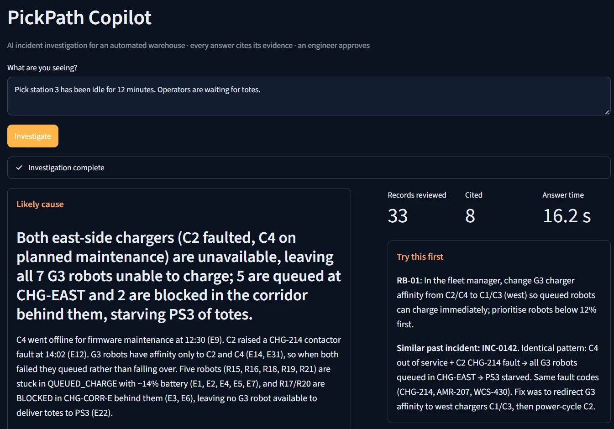
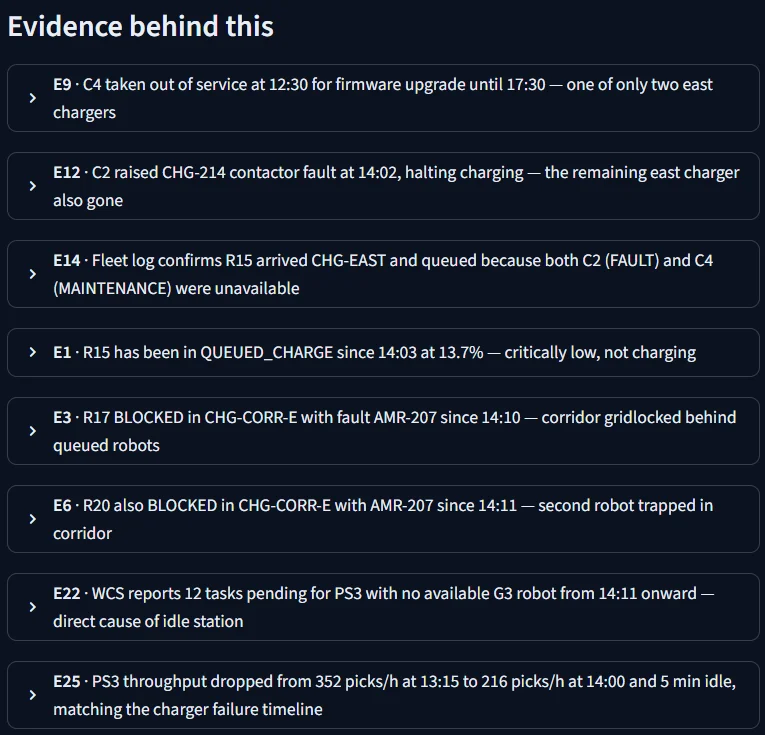
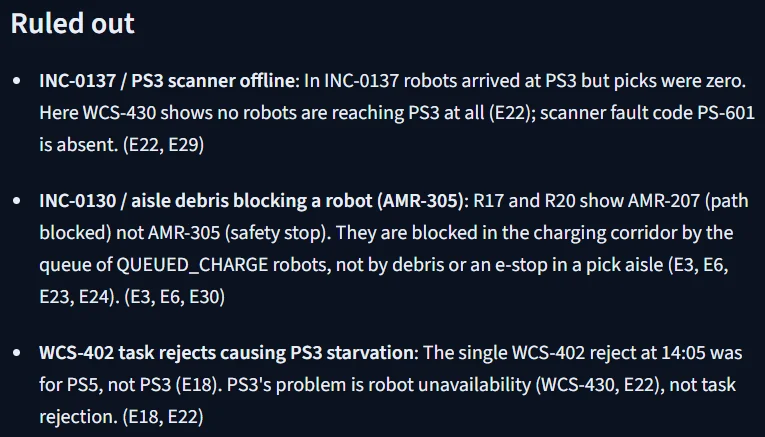
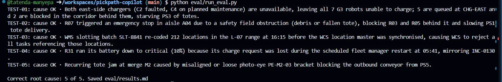
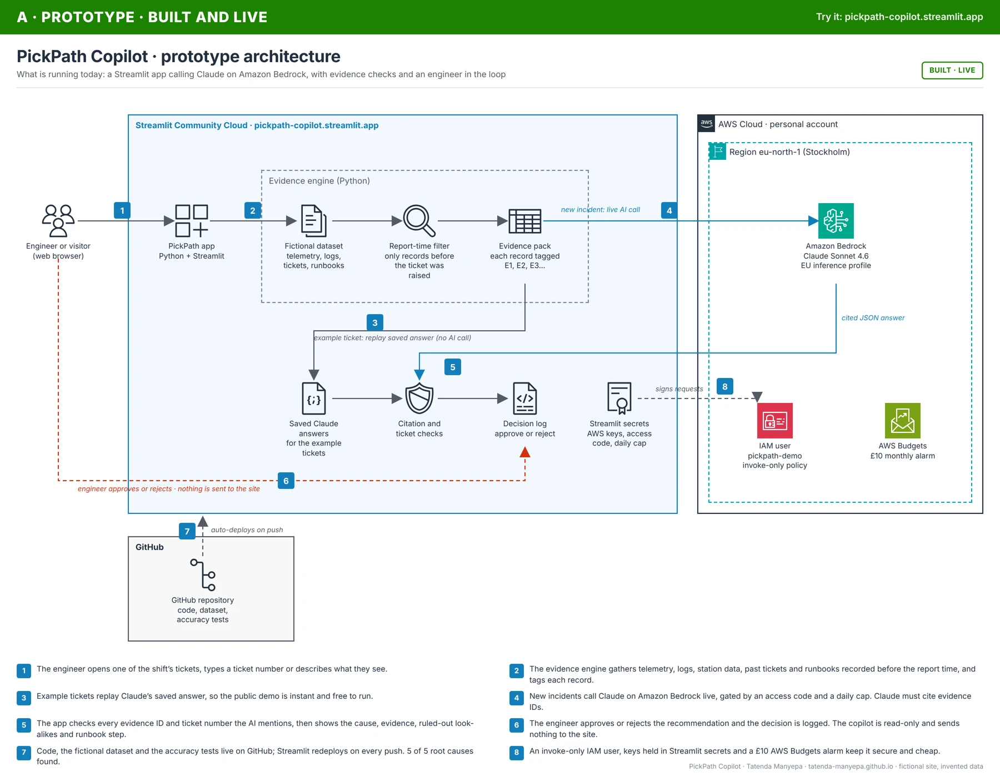
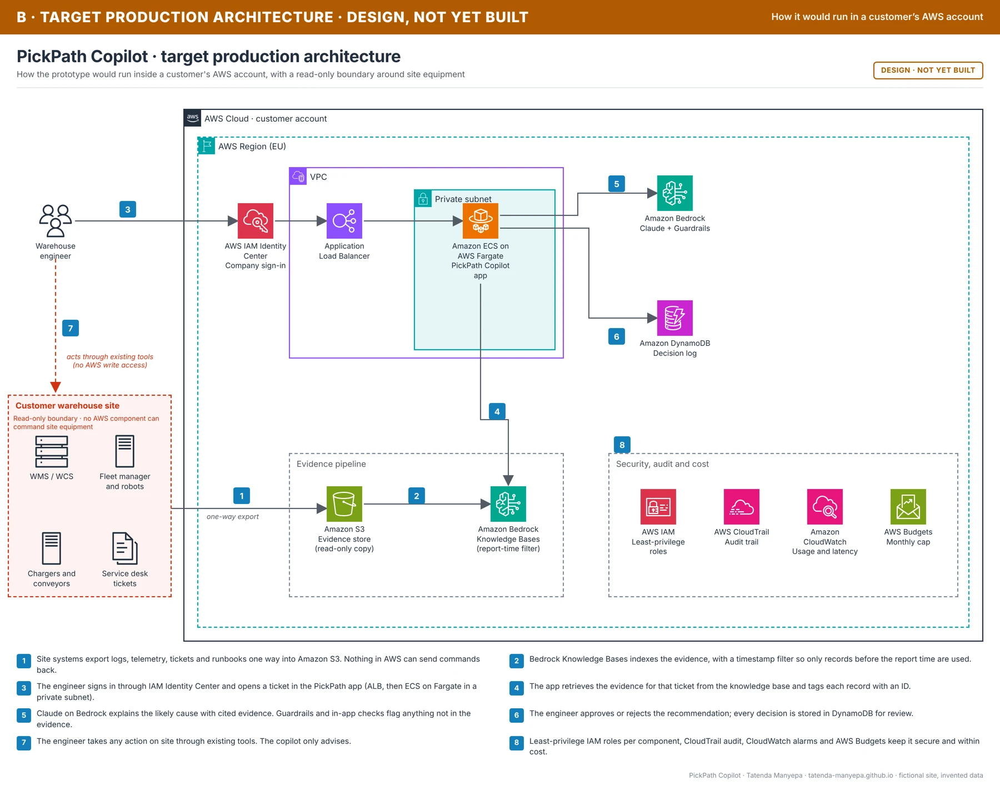

Case study · Solution design · Warehouse automation
PickPath Copilot
Can AI help an engineer find the cause of a robot incident faster, without ever touching the robots?
Independent project built on invented data. No Inteq customer, system, data or fault code is used.
01 / THE PROBLEM
Incidents cross layers. Investigations cross tools.
Northgate Fulfilment (fictional) runs a 24/7 e-commerce distribution centre near the M1. Its warehouse management system releases about 2,000 order lines an hour. A warehouse control system turns them into jobs for 40 autonomous mobile robots, which bring totes from automated storage to six pick stations.
When something fails, the symptom and the cause sit in different places. Pick station 3 goes idle, but the cause is a charger fault in another part of the building. Engineers spend most of each incident searching telemetry, logs, past tickets and runbooks in separate tools.
All figures are stated assumptions for the fictional site.
02 / DISCOVERY AND JUDGEMENT
AI for two incident types, not five
Before designing anything, I sorted the site’s common incidents by what would fix them best. AI earns its place only where the cause is spread across several sources and changes from one incident to the next.
| Incident type | Best fix | Why |
|---|---|---|
| Robot fault blocks an aisle | AI copilot | Cause spans telemetry, maps and tickets |
| Robots queue at a failed charger | AI copilot | The symptom (an idle station) is far from the cause |
| Warehouse system messages rejected | Automated check and alert | Same signature every time; a rule is cheaper |
| Robot battery below threshold | Better alerting | One metric, one threshold |
| Recurring conveyor jam at one merge | Maintenance fix | Known cause; it needs an engineering fix, not AI |
03 / THE SOLUTION
One question, answered with evidence
The copilot answers one question well: what is most likely causing this incident, and what does the evidence say?
Describe the incident
An engineer types what they see, in plain English.
Gather the evidence
The copilot searches robot telemetry, control system logs, past tickets and runbooks, using only records from before the incident was reported.
Explain the likely cause
It returns the likely cause, the evidence behind it with sources, a similar past incident and the runbook step to try.
Engineer decides
The engineer approves or rejects the recommendation, and the decision is logged.
Deliberately out of scope: sending any command to robots, conveyors or control systems; replacing monitoring and alerting; production deployment.
engineer › “Pick station 3 has been idle for 12 minutes. Operators are waiting for totes.”
In the demo, the copilot has to connect a charger fault, a second charger already in planned maintenance, five robots queuing at low battery and two more blocked behind them. It also has to ignore two decoys: a past ticket with the same symptom but a different cause, and an unrelated error logged at the same time.
Built with Python and Streamlit on Amazon Bedrock (Claude Sonnet 4.6, EU inference profile).
04 / THE PROTOTYPE
It found the cause, and ignored the decoys
Given only the engineer’s one-line report and the records up to 14:21, PickPath read 33 records, cited 8, and named the cause in 16 seconds: charger C2 had failed while C4 was in planned maintenance, so every robot serving station 3 was queued or blocked.



How I catch AI mistakes
The app checks every answer before showing it. If the AI mentions an evidence ID or ticket number that was not in what it was given, the engineer sees a warning. I added the ticket check after spotting the mislabel above in testing.
Try it yourself: the live demo replays Claude’s real answers for the five example incidents. To run your own incident live, ask me for the access code. Live runs are capped daily to control cost.
Accuracy check
I ran all five planted incidents through the copilot. It found the right root cause in 5 of 5, including the three where the best fix is not AI: a rule for message rejects, an alert for a lost charge request and a maintenance fix for a recurring jam.

python eval/run_eval.pyHonest limit: five incidents I wrote alongside the data is a small test. The next step is ten or more unseen incidents written by someone else.
05 / BUSINESS CASE
Pays back within a quarter, even at half the benefit
If the copilot cuts investigation time from 40 to 15 minutes, the site avoids about £23,000 a month in downtime, engineer time and late-delivery penalties. Assuming only half of that is realised, and after £1,000 a month in running costs, a £25,000 pilot pays back in about 2.4 months.
Every figure is an assumption I would test with the customer during discovery.
06 / CLOUD DESIGN
Prototype now, production-ready design
The prototype keeps costs and moving parts low. The production design shows how it would run safely inside a customer’s AWS account.


| Layer | Prototype | Production design |
|---|---|---|
| Data | Fictional dataset files | Logs and telemetry copied one way into Amazon S3 |
| Evidence search | Python filters records by time and relevance | Amazon Bedrock Knowledge Bases over S3 |
| AI model | Claude Sonnet 4.6 on Amazon Bedrock, EU inference profile | Same model, with Bedrock Guardrails |
| App | Streamlit in a cloud dev environment | Container on Amazon ECS Fargate behind company sign-in |
| Access | IAM user that can only call the model | Separate least-privilege IAM role for each component |
| Cost and monitoring | £10 monthly budget alarm | CloudWatch usage alarms, dashboards and a monthly budget cap |
The design follows AWS Well-Architected priorities: security through read-only access and least privilege, cost through pay-per-use AI and budget alarms, and reliability through a simple rollback, because switching the copilot off leaves the existing process unchanged.
07 / RISKS AND GOVERNANCE
The copilot advises. An engineer decides.
| Risk | Control |
|---|---|
| AI suggests the wrong cause | Every answer cites its evidence; no evidence, no recommendation; engineer approval required |
| Unsafe action on physical equipment | Strictly read-only, with no write access to robots, conveyors or control systems |
| Sensitive operational data exposed | Least-privilege access; data stays in the company’s cloud account |
| Accuracy drifts as the site changes | Monthly test against known incidents; new tickets added to the knowledge base |
| Nobody owns it after launch | Named owner in operations; rollback means switching it off, with the existing process unchanged |
Before production: a formal accuracy evaluation, access control and audit, a security review, and a one-site pilot with success criteria agreed up front.